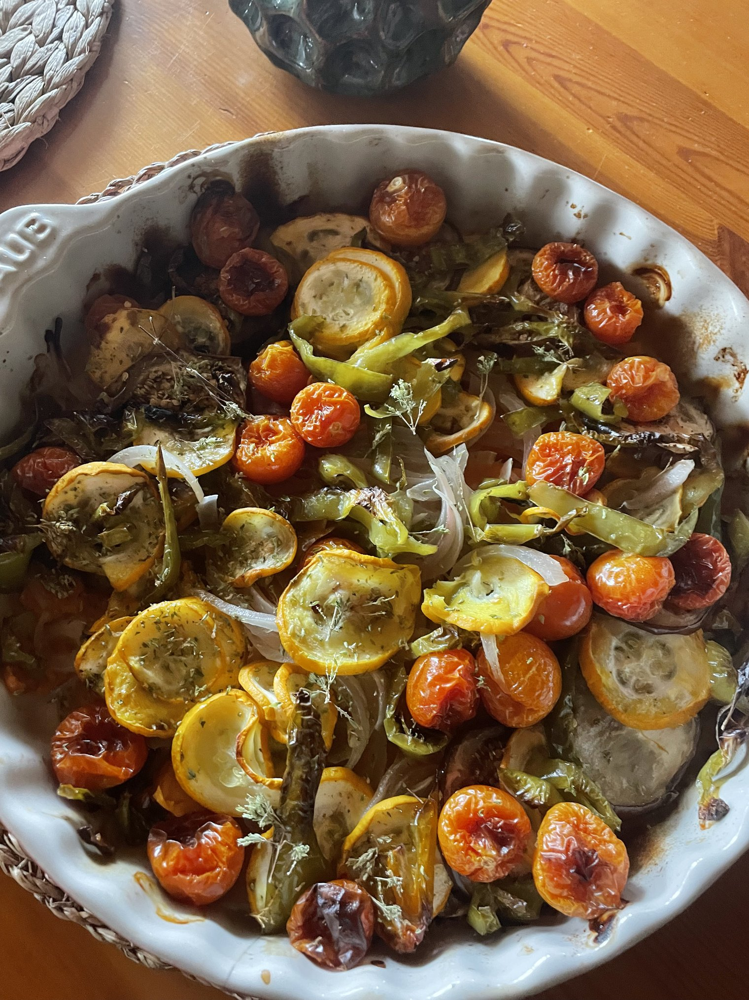

Verduras al horno con feta y romero
Ingredients
2×
- 2 pimientos
- 1 cebolla
- 2 zanahorias
- 200 g de tomates cherry
- aceite de oliva
- sal
- romero
- 100 g de feta

Preparación
Paso 1
Cortar 2 pimientos en tiras, 1 cebolla en gajos y 2 zanahorias en rodajas. Ponerlos en una bandeja de horno con 200 g de tomates cherry.
Paso 2
Aliñar con aceite de oliva, sal y romero.
Paso 3
Hornear 40min a 200ºC.
Paso 4
Servir con 100 g de feta desmenuzado por encima.